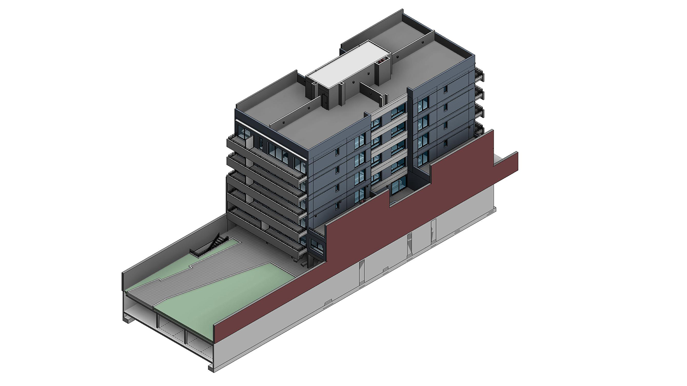
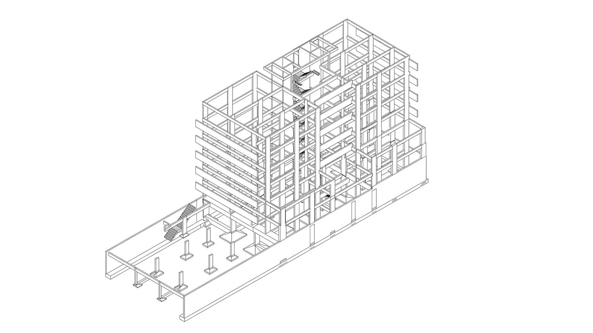
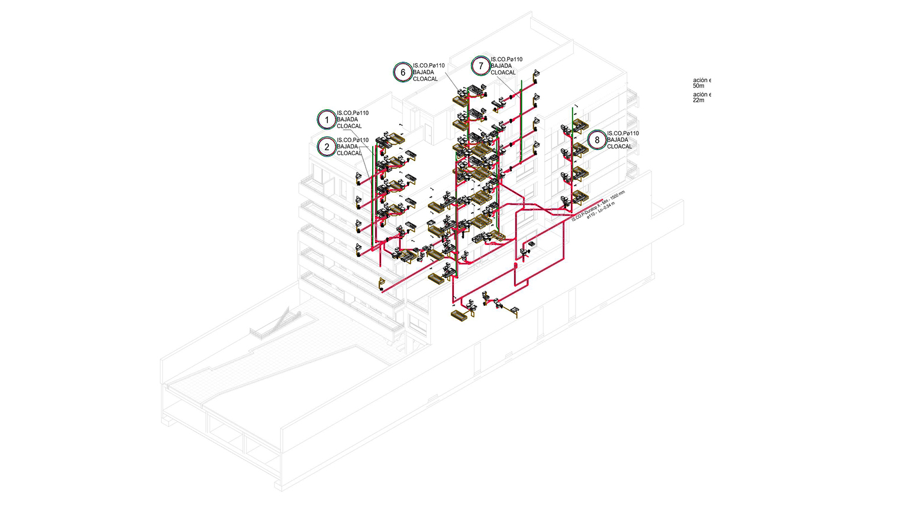
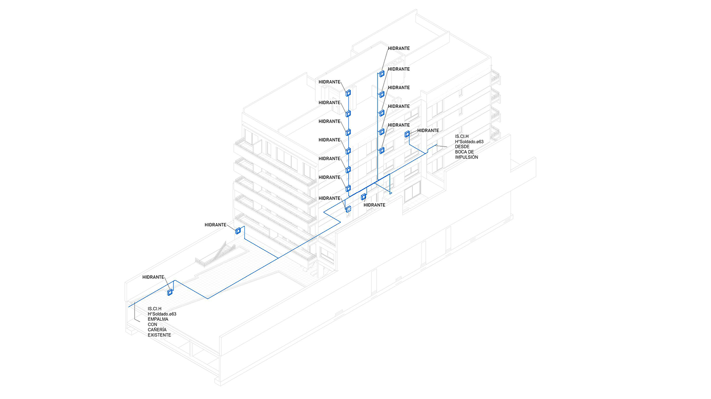
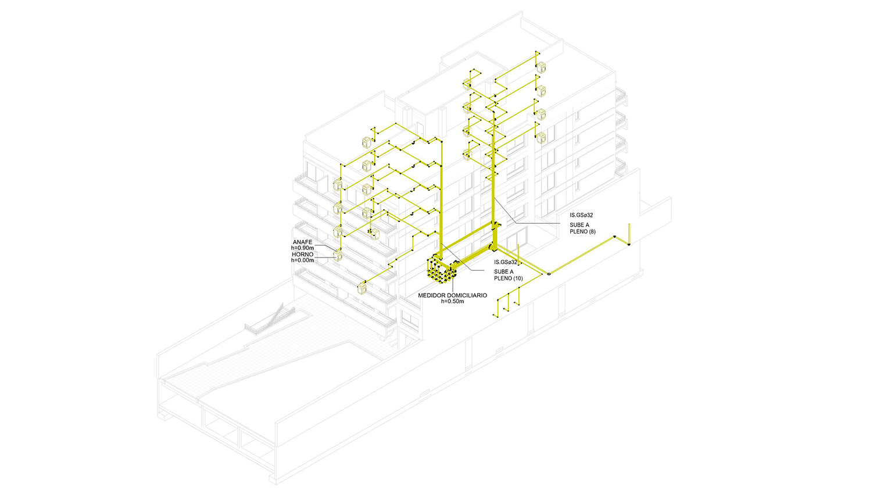
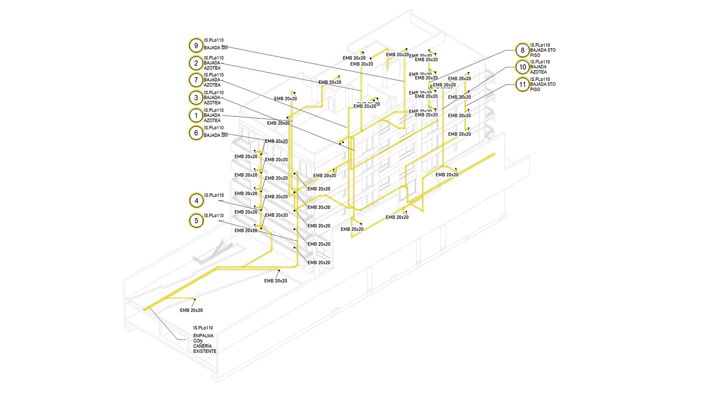
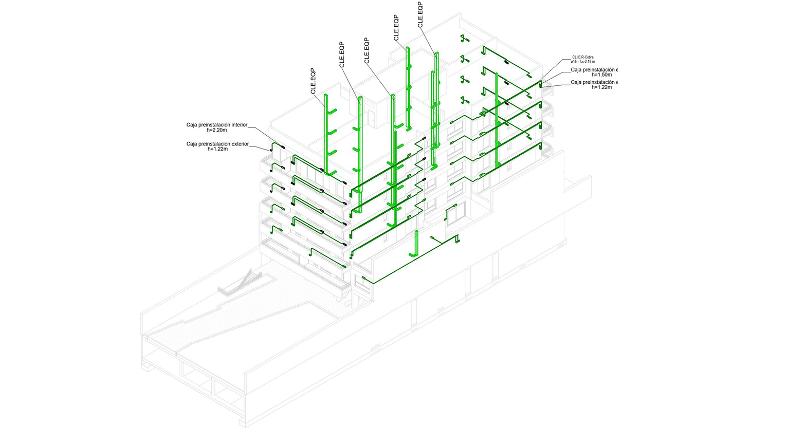

Arquitectura
El modelo arquitectónico forma la base de nuestro proceso de coordinación BIM. Abarca la envolvente completa del edificio, distribuciones espaciales y elementos estéticos que definen la visión y funcionalidad del proyecto.

Estructura
El sistema estructural proporciona el marco esquelético que soporta todo el edificio. Nuestro modelo BIM integra cimentaciones, columnas, vigas y losas para garantizar la integridad estructural y coordinación con elementos arquitectónicos.

Sanitario
El sistema sanitario gestiona las aguas residuales y el drenaje en todo el edificio. Nuestro modelo incluye todos los artefactos, tuberías de desagüe, ventilaciones y conexiones para garantizar el flujo adecuado y el cumplimiento de las normativas sanitarias.

Agua Potable
El sistema de agua potable distribuye agua limpia en todo el edificio y gestiona la distribución de agua caliente. Nuestra coordinación BIM asegura un trazado óptimo, gestión de presión y accesibilidad para mantenimiento.

Protección contra Incendios
La seguridad de vida es primordial. Nuestro sistema de protección contra incendios incluye rociadores, columnas secas y equipos de supresión, todos coordinados para proporcionar cobertura integral manteniendo requisitos estéticos y funcionales.

Gas
El sistema de distribución de gas entrega de manera segura gas natural a equipos y artefactos. Nuestro modelo asegura el dimensionamiento adecuado, requisitos de ventilación y medidas de seguridad integradas en todo el edificio.

Pluvial
El sistema pluvial conecta el edificio con la infraestructura municipal, gestionando toda la descarga de aguas residuales. Nuestra coordinación asegura pendientes adecuadas, acceso para limpieza y cumplimiento de regulaciones locales.

HVAC/COVES
El sistema HVAC proporciona control climático y ventilación para el confort de los ocupantes y la calidad del aire. Nuestro modelo integral incluye calefacción, refrigeración, ventilación y controles, todos coordinados para optimizar espacio y rendimiento.